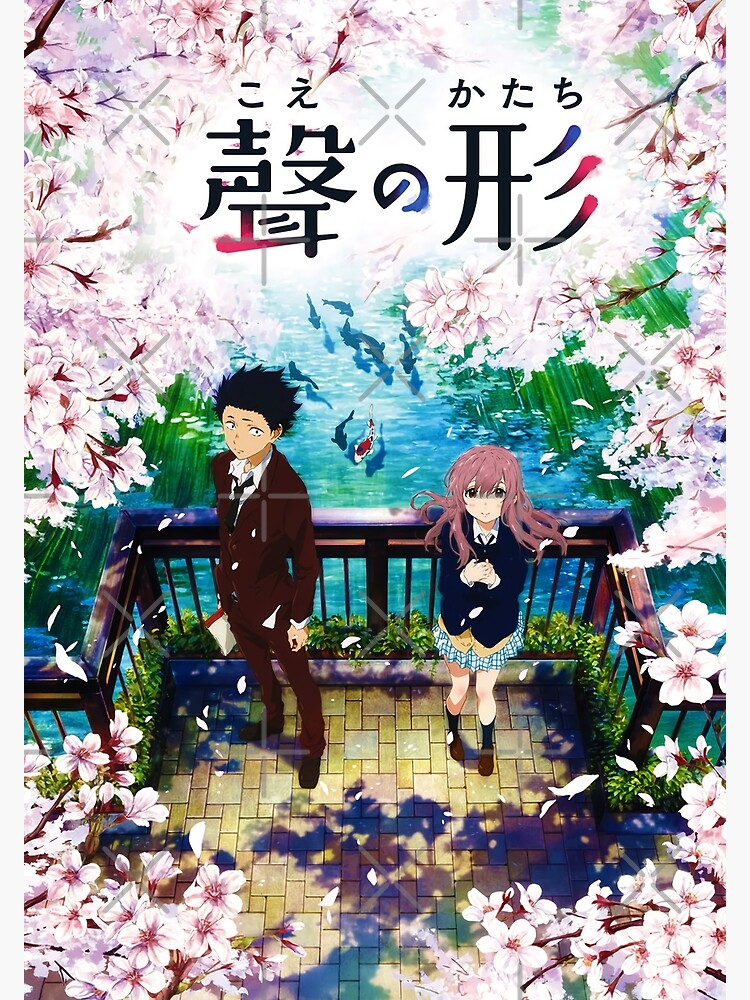
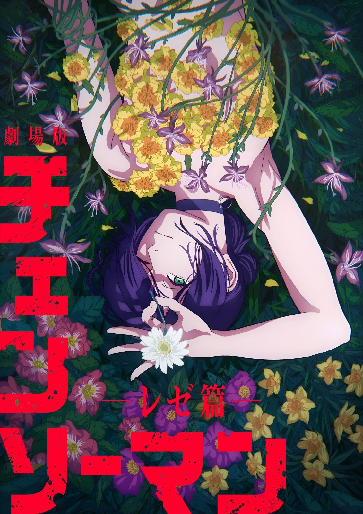

Home
A Silent Voice
This movie tells the story of a former bully who tries to make things right after hurting a deaf girl when they were younger. It focuses on guilt, friendship, growth, and learning how to connect with other people.

Company Credits: Kyoto Animation; Shochiku
Release Date: September 17, 2016 (Japan)
Genres: Psychological Drama, Anime, Slice of Life
Rating: PG 13
Running Time: 2h 10m (130 minutes)
Chainsaw Man - The Movie: Reze Arc
This movie follows Denji as he gets pulled into another dangerous and emotional situation. It mixes action, horror, and drama, while also showing how Denji deals with trust, relationships, and the violent world around him.

Company Credits: MAPPA; Toho (Japan); Crunchyroll / Sony Pictures Releasing (worldwide)
Release Date: September 19, 2025 (Japan)
Genres: Animation, Action, Adventure, Comedy, Fantasy, Romance, Thriller
Rating: R
Running Time: 1h 40m